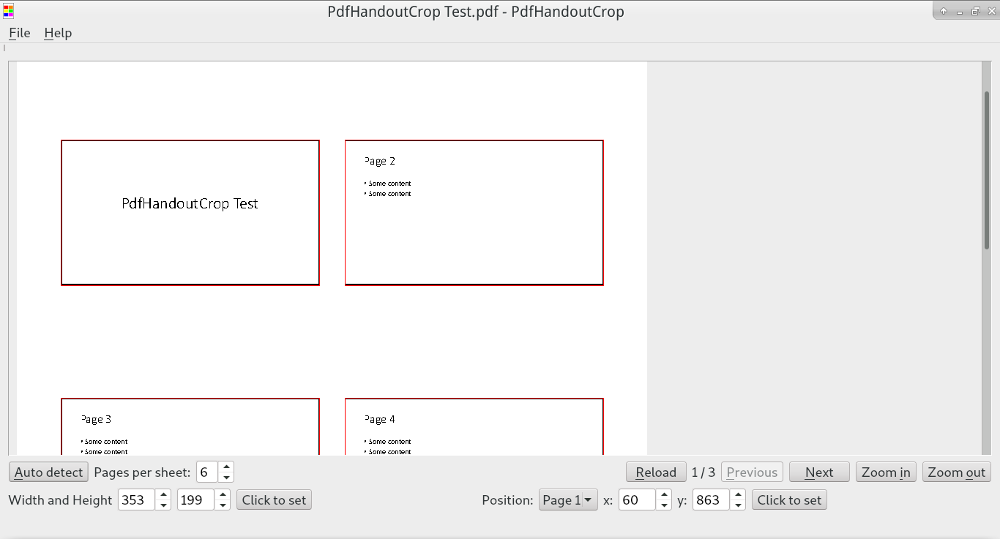

PdfHandoutCrop is a tool to crop pdf handout with multiple pages per sheet. Sometimes the teacher give us handout in pdf format with multiple pages per sheet. If I print it directly, the font size and pictures are too small to read. So I created PdfHandoutCrop to help me crop the handout.
